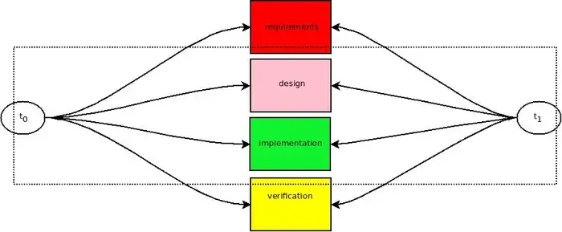

Everett, 1957
Hugh Everett III submitted his PhD thesis at Princeton in 1957, proposing what he called the relative state formulation of quantum mechanics. A shortened version appeared in Reviews of Modern Physics. It is the origin of what everyone now calls the many-worlds interpretation.
Maps, diagrams and images


The problem Everett was addressing is real and still unsolved. Quantum mechanics describes a system with a wavefunction that evolves smoothly and deterministically; measurements, however, appear to return one definite outcome out of many possibilities. The standard textbook (“Copenhagen”) response is to say that the wavefunction collapses on measurement — while leaving it vague what counts as a measurement.
Everett's move: remove the collapse. The wavefunction never collapses. It keeps evolving, and the appearance of a single outcome is what it looks like from inside one branch of an increasingly entangled whole.
What “branching” means — and does not
The popular version says every decision splits reality, so there is a world where you took the other job. That is a distortion in two ways.
It is about measurement outcomes, not choices. Branching, if it happens, happens when quantum superpositions interact with an environment in a way that spreads entanglement — decoherence. A mind deciding between two jobs is not a quantum measurement in any useful sense; it is a hot, wet, decoherent system.
It is not a free lunch for storytelling. The branches are not accessible. There is no travel, no communication, no evidence from “the other side”. Once a branch has decohered, its internal physics is sealed off from ours for all practical purposes.
The technical machinery is decoherence, developed from the 1970s onward by Zeh, Zurek and others: interactions with the environment suppress interference between alternatives so rapidly that macroscopic superpositions become unobservable. Many-worlds reads that suppression as branching. Copenhagen reads it as the appearance of collapse. Both describe the same mathematics.
Many-worlds is not a conspiracy theory, not a hoax, and not fringe. It is one of several live interpretations, taught in physics departments, defended by serious physicists (DeWitt, Deutsch, Wallace, Carroll) and criticised by others (Penrose, and a long line of collapse-theory proponents).
Its weakness is the same as every interpretation's: no experiment currently distinguishes it from its rivals. If two frameworks make identical predictions for every measurement, the difference between them is metaphysics — which is not an insult, but it is not evidence either.
Why it belongs in this archive
Because it is the test case for the archive's whole method. The same story — “everything that can happen does happen, in another world” — appears here in three forms:
- The physics (Everett): a precise, austere, mathematics-first proposal about entanglement.
- The popularisation: branching universes where you are rich, famous, and married to someone else. Not physics; a metaphor with the maths removed.
- The crossover: quantum immortality, “the mandela effect is a timeline jump”, “manifestation uses quantum branches”. These are not interpretations of quantum mechanics. They are false-memory folklore with a physics vocabulary attached to make them feel rigorous.
The tell is always the same: real physics states what would have to be measured. The crossover version states only what would be nice.
The human footnote
Everett left physics soon after, worked on military modelling, and died in 1982 at 51. His daughter's suicide note reportedly said she was going to join him in another universe, and his son — Mark Oliver Everett, of the band Eels — made a documentary, Parallel Worlds, Parallel Lives, about meeting the physicists who took his father seriously long after his father had given up on them.
That is the archive's recurring theme in its most sympathetic form: an idea that was ridiculed, then absorbed; the cost to the person who had it; and the long gap between the two.
Sources for this page
- Stanford Encyclopedia of Philosophy, “Everett’s Relative State Formulation of Quantum Mechanics”plato.stanford.edu
- Wikipedia, “Many-worlds interpretation” — Everett 1957, DeWitt, decoherenceen.wikipedia.org
- Britannica, “Many-worlds interpretation”britannica.com
- Adler Planetarium, “Top multiverse theories”adlerplanetarium.org
- BBC, Parallel Worlds, Parallel Lives (2007) — Mark Everett on his fatherbbc.co.uk
Open resources on this topic
- BookMany-Worlds Interpretation of Quantum Mechanics and Wave-Particle Dualism. — Bezverkhniy Volodymyr Dmytrovych. · 2021 (Internet Archive, free to read)
- BookSo many worlds : invention, management, philosophy, and risk in the life of Leroy Hill — Miner, H. Craig · 1997 (Internet Archive, free to read)
- Bookthe many worlds of man — 1964 (Internet Archive, free to read)
- PapersOpen-access articles: DOAJ · PubMed Central · Internet Archive Scholar
- BooksPublic-domain and borrowable copies: Open Library · Project Gutenberg · Google Books
Cite this page
Momin, S. (2026). Many Worlds. The Larger World Archive. https://drsamonline.github.io/LARGE_GLOBE/many-worlds.htmlMomin, Sohil. “Many Worlds.” The Larger World Archive, 2026, https://drsamonline.github.io/LARGE_GLOBE/many-worlds.html.Momin, Sohil. “Many Worlds.” The Larger World Archive, 2026. https://drsamonline.github.io/LARGE_GLOBE/many-worlds.html.@misc{many2026many,
author = {Momin, Sohil},
title = {Many Worlds},
year = {2026},
howpublished = {The Larger World Archive},
url = {https://drsamonline.github.io/LARGE_GLOBE/many-worlds.html},
note = {Last reviewed 20 November 2026}
}Last reviewed 20 November 2026 · Corrections policy · this page is not peer reviewed